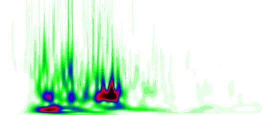

新论文 | 卷积神经网络 + 小波时频图：基于地震动时频域特征的震害评估新方法


图1 地震动加速度时程及其“照片”（小波时频图）
00
太长不看版本
01
问题的引入
(1) 基于CNN和无人机的破坏力快速评估方法（论文：基于无人机与深度学习的建筑震害评估方法）
(2) 基于半监督学习的城市建筑物属性确定方法（论文：这栋楼是什么结构的，元芳，你怎么看？）
(3) 基于长短时记忆神经网络（LSTM）的应急震害评估方法（论文：如何将地震破坏力评估加速1500倍？）
(4) 基于多元地震动强度指标和机器学习的指标比选与震害评估方法（论文：基于机器学习方法的多元地震动强度指标比选与实时震害预测）
02
方法框架
(1) 地震动选择、预处理及结构建模
(2) 震害指标计算与获取
(3) 训练与测试CNN
(4) 应急震害预测

(a) 本文方法框架

(b) CNN网络基本架构示意图
图2 方法框架与CNN网络基本架构
03
数据预处理
(1) 调幅：对加速度时程乘以1.0、2.0、3.0和4.0的放大系数，完成地震动调幅。该步预处理旨在针对天然地震动中强震比例较低的现象，提升强破坏力地震动比例，使地震动数据库相对更为均衡。
(2) 持时调整：截取PGA出现时刻前后30s的地震动峰值区段，舍弃其余区段。该步骤是为了保证所有输入CNN的小波时频图的尺寸及其语义（即图像中每个像素点所代表的时域步长与频域区段大小）的一致性。
(3) 小波时频图绘制：基于上述截取的地震动区段，开展小波变换（采用Complex Gaussian Wavelet 8小波，如图3(a)所示），得到小波系数、绘制小波时频图，并裁切掉小波时频图的标题、坐标轴部分（在所有图像中，这些部分是完全一致的，因此不能提供任何有意义的信息），仅保留有实际意义的部分（如图3(b)所示）。

(a) 所用小波（Complex Gaussian Wavelet）

(b) 裁剪后小波时频图
图3 小波时频图的生成与裁剪
04
案例分析


05
结论
---End---

徐永嘉
相关研究
新论文：抗震&防连续倒塌：一种新型构造措施
长按识别二维码，关注我们的科研动态